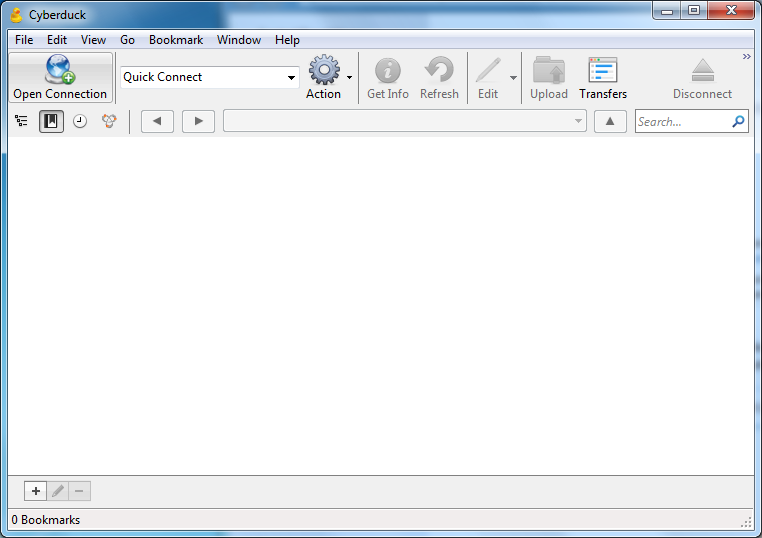
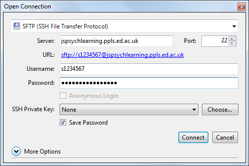
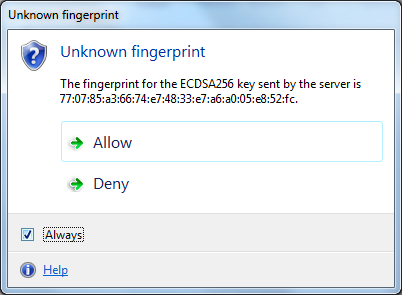
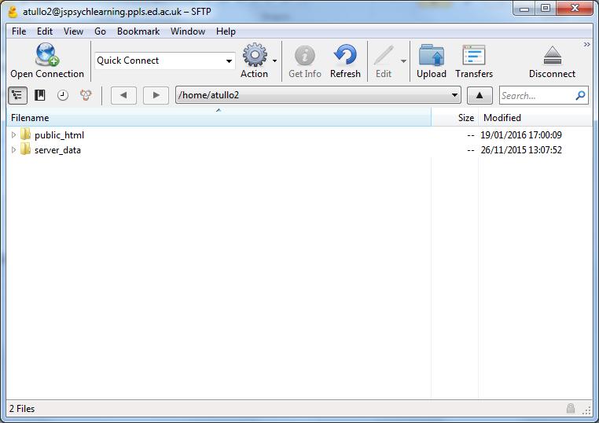

An introduction to jsPsych¶
jsPsych is a JavaScript framework that makes it easier to construct presentation experiments.
A typical jsPsych experiment will follow a sequence something like this:
1. First, the experiment is loaded from the server onto the participant’s web browser (client). This is just like loading any other web page, so everything you saw in the last section about the network, web pages, HTML, CSS and so on applies here.
2. Now the experiment runs. This can happen entirely within the participant’s web browser – it may not need to talk to the server at all. (It might though, for example to load images).
3. Finally, the experiment sends the results from the experiment back to the server.
First experiment¶
Let’s take a look at the jsPsych website.
We’re going to follow the first tutorial. On the left of the page, click on “Tutorials” and then “The Basics: Hello World”.
This first example only uses the web browser, it doesn’t send any information back to the server. Once you’ve got it working, I’ll show you how to run the same experiment, with the files on the server.
Here are some extra notes; keep these handy while you follow the tutorial.
- Step 1
For convenience, here’s the download link for jsPsych.
- Step 2
To create your file, in your text editor use “Save As ….”. Go to the folder where you unpacked jsPsych, and give the filename
experiment.html.- Step 3
To open
experiment.html, try double-clicking on it. If that doesn’t work, right-click on it, choose “Open with ….” and choose a web browser.- Step 4
If you already have the file open in the web browser, you just need to reload it. If that doesn’t work you may need to “hard reload”. How you do this depends on your browser:
Follow the tutorial through to the end. This will tell you how to create this first simple jsPsych program in the web browser. At this point it’s still all running on your computer – the browser is reading files from your computer’s disk. Nothing is being loaded from the internet.
In a real online experiment, the files for the experiment would be on another computer (a server) and the participant would access them over the internet. Next, we’ll look at how to upload your experiment files to a server.
Uploading your experiment¶
You should have an account on the experiment server, jspsychlearning.ppls.ed.ac.uk.
If not, please ask one of the tutors.
To upload the experiment you’ll need some file transfer software. You’re welcome to use whatever you feel most comfortable with. For Windows or Mac, I recommend the free and open source program CyberDuck:
For Linux, it will depend on your distribution. In most Linux distributions you can
connect directly in the file browser, or use the scp command.
Connect¶
These instructions use CyberDuck, but will be similar for other methods.
First, open CyberDuck, and click on the “Open Connection” button:
This window will appear:
Select “SFTP” from the dropdown menu at the top. Fill in your UUN and the password you were given for your account. Under “Server” give the value:
jspsychlearning.ppls.ed.ac.uk
Click on Connect.
This warning appears because CyberDuck on your computer hasn’t connected to this server before. Click “Allow”.
You should now see this view. It shows two folders 1, public_html
and server_data.
Finally, you can make things more convenient for next time by selecting:
Bookmarks → New bookmark
in the CyberDuck menu. This will save these connection settings so you don’t have to type them in again.
Upload¶
Now create a new folder for your experiment. In CyberDuck, first go into the
public_html directory by double-clicking on it. Right-click and select “New folder ….”.
Call your new folder hello. (You can use another name if you like, but it’s best
to use a name without any spaces – if you want to use multiple words, separate them with
the underscore character, _). Click Create.
Now drag your experiment file, experiment.html, and the jspsych folder, over into your
new folder.
This will copy the files over to the server. Now you’re ready to test your experiment.
Test¶
In your web browser, go to:
http://jspsychlearning.ppls.ed.ac.uk/~UUN/hello/experiment.html
but replace “UUN” with your username.
You should see the text “Hello world” (or whatever message you wrote) in the middle of the screen.
Nodes¶
Every jsPsych experiment is a series of nodes. Most nodes show a stimulus, or a set of stimuli, and then collect a response. In the tutorial you saw the example:
var hello_trial = {
type: 'html-keyboard-response',
stimulus: 'Hello world!'
}
This bit of code is in JavaScript. We’ll take a closer look at that later, but for now, all you need to know is that it defines a jsPsych node.
Every node that displays some content has a “type” field. These types allow you to do different things like:
Present a stimulus and collect a keyboard response
Present a stimulus and collect a click response (button)
Present a multiple choice question
and many others.
Go back to the jsPsych website and click on “Plugins”.
The node above has the type html-keyboard-response. The corresponding plugin
is jspsych-html-keyboard-response. Find this in the response and click on it.
Each kind of node can be set up using different parameters. The name of each parameter is the thing before the colon : in the code above. For example:
stimulus: 'Hello world!'
means “the value of the stimulus parameter should be 'Hello world!'.
You’ll notice that most of these parameters weren’t specified in our example.
Every parameter has a default value. If a value isn’t given, jsPsych will use
this default value. In the case of html-keyboard-response, for example, the default
for trial_duration is null. In the documentation it says:
If this is null, then the stimulus will remain visible until the trial ends.
In other words, the default is to wait until the trial ends. This leads to
another question – when does the trial end? Take a look at the response_ends_trial
parameter.
Exercise¶
To illustrate the difference between different kinds of nodes, let’s change
our “Hello world” example to display an image. Take a look at the documentation
for jspsych-image-keyboard-response plugin. You can pick your own image to
display, or if you need one,
use this.
Now try to change your jsPsych program to show the image.
You’ll have to:
Upload the image with CyberDuck – make sure it’s in the same place as your experiment
Change the type of the node in the JavaScript code
Add the
jspsych-image-keyboard-responseat the top of your HTML file (see step 6 of the tutorial).Give jsPsych the name of the image – check the documentation to see how.
Upload your code again once you’ve made these changes.
A couple of things about files on the server:
Note that you have to include the file extension of the image (e.g. .jpg or .png). By default Windows and Mac OS X will hide this from you. It is part of the filename, though, so without it jsPsych can’t find the file.
The server cares about case of letters (capital vs. lower case letters). For example, if the file is called MYFACE.JPG and you type MyFace.jpg in your experiment, it won’t work.

{kind=link}
{kind=link}
{kind=link}
{kind=link}